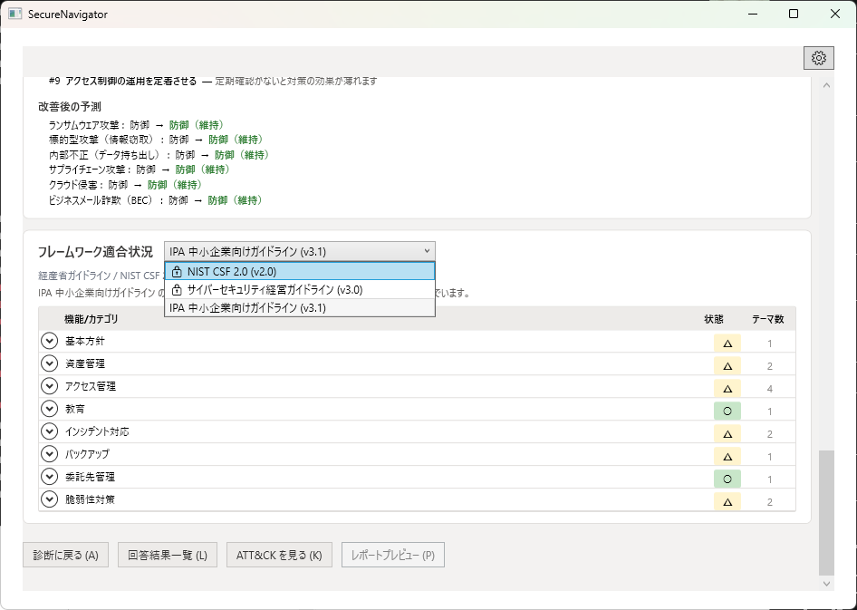
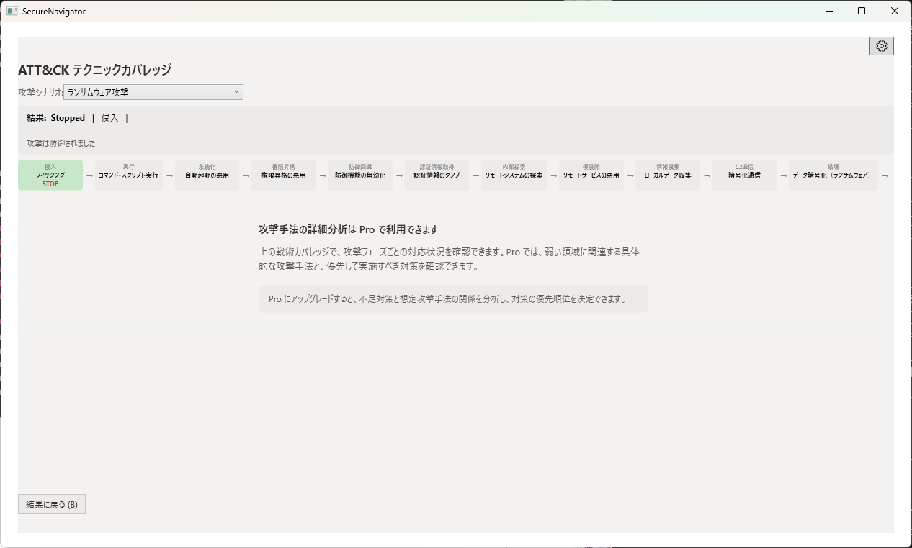
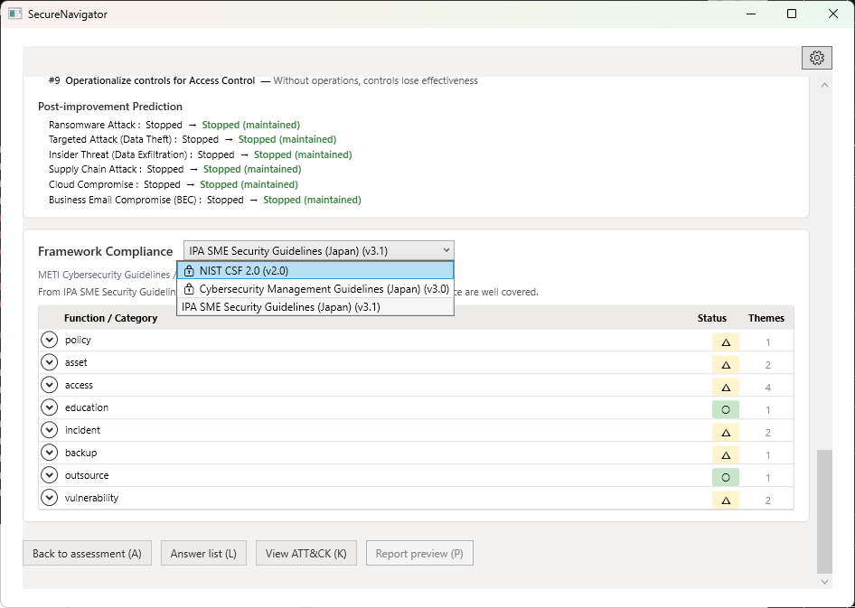
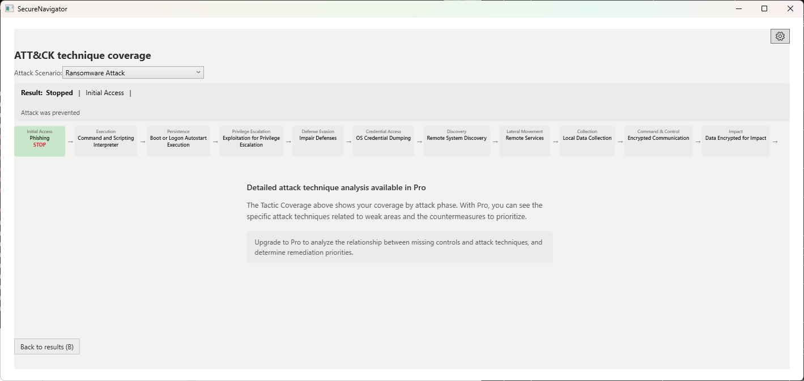

Chapter 8: Free と Pro の違い
機能比較、Pro で追加される機能、アップグレード方法
機能比較表
| 機能 | Free | Pro |
|---|---|---|
| 全質問への回答（ヒアリング） | 対応 | 対応 |
| 攻撃シナリオシミュレーション（6シナリオ） | 対応 | 対応 |
| 改善ロードマップ（画面表示） | 対応 | 対応 |
| 弱点マップ（テーマ x レイヤー） | 対応 | 対応 |
| IPA 中小企業向けガイドライン適合評価 | 対応 | 対応 |
| 経産省サイバーセキュリティ経営ガイドライン適合評価 | --- | 対応 |
| NIST CSF 2.0 適合評価 | --- | 対応 |
| ATT&CK テクニック詳細分析 | --- | 対応 |
| ATT&CK マトリクスビュー | --- | 対応 |
| 完全レポートプレビュー | 簡易版のみ | 対応 |
| PDF レポートエクスポート | --- | 対応 |
| セッション保存数 | 1件 | 3件 |
Pro で追加される主な機能
追加フレームワーク適合評価
Free 版では IPA 中小企業向けガイドラインのみ対応していますが、Pro 版では経済産業省のサイバーセキュリティ経営ガイドラインおよび NIST Cybersecurity Framework 2.0 への適合評価も利用できます。これにより、国際基準や国内の経営層向けガイドラインへの対応状況を確認できます。


ATT&CK テクニック詳細と マトリクスビュー
Pro 版では、各攻撃ステップに関連する MITRE ATT&CK テクニックの ID、名称、説明を確認でき、さらに ATT&CK マトリクス形式で防御のカバレッジを一覧できます。セキュリティ専門家やコンサルタントが詳細な分析を行う際に有用です。

完全レポートと PDF エクスポート
Pro 版では、経営層や監査向けのコンサルタントレベルの完全レポートを生成し、PDF ファイルとしてエクスポートできます。レポートには弱点分析、攻撃シナリオ評価、フレームワーク適合状況、改善ロードマップが網羅的に含まれます。
複数セッション
Free 版では診断セッションを1件のみ保存できますが、Pro 版では最大3件まで保存可能です。複数の組織や部門の評価を並行して管理したり、時期を変えて同じ組織を再評価して改善の進捗を確認する際に便利です。
アップグレード方法
- Microsoft Store で SecureNavigator のページを開きます。
- Pro 版のアドオンまたはサブスクリプションを購入します。
- 購入が完了すると、次回起動時に自動的に Pro 版として認識されます。
Pro へのアップグレード後、既存の Free 版の診断データはそのまま引き継がれます。追加のフレームワーク評価やレポート機能がすぐに利用可能になります。
Chapter 8: Free vs Pro Features
Feature comparison, what Pro adds, how to upgrade
Feature Comparison Table
| Feature | Free | Pro |
|---|---|---|
| Full assessment (all questions) | Yes | Yes |
| Attack scenario simulation (6 scenarios) | Yes | Yes |
| Improvement roadmap (on-screen) | Yes | Yes |
| Weakness map (Theme x Layer) | Yes | Yes |
| IPA SME Guidelines compliance | Yes | Yes |
| METI Cybersecurity Management Guidelines compliance | --- | Yes |
| NIST CSF 2.0 compliance | --- | Yes |
| ATT&CK technique detail analysis | --- | Yes |
| ATT&CK matrix view | --- | Yes |
| Full report preview | Simplified only | Yes |
| PDF report export | --- | Yes |
| Saved sessions | 1 | 3 |
What Pro Adds
Additional Framework Compliance
While the Free edition supports only the IPA SME Guidelines, Pro adds compliance evaluation against the METI Cybersecurity Management Guidelines and NIST Cybersecurity Framework 2.0. This lets you check alignment with international standards and domestic executive-level guidelines.


ATT&CK Technique Detail and Matrix View
Pro provides MITRE ATT&CK technique IDs, names, and descriptions for each attack step, plus a matrix view showing defense coverage at a glance. This is valuable for security professionals and consultants performing detailed analysis.

Full Report and PDF Export
Pro generates a consultant-grade full report for executives and auditors, exportable as a PDF file. The report comprehensively covers weakness analysis, attack scenario evaluation, framework compliance, and the improvement roadmap.
Multiple Sessions
The Free edition allows saving 1 assessment session, while Pro supports up to 3. This is useful for evaluating multiple organizations or departments in parallel, or re-assessing the same organization at different times to track improvement progress.
How to Upgrade
- Open the SecureNavigator page in the Microsoft Store.
- Purchase the Pro add-on or subscription.
- After purchase, the app will automatically recognize your Pro license on the next launch.
After upgrading to Pro, your existing Free edition assessment data is fully preserved. Additional framework evaluation and report features become available immediately.